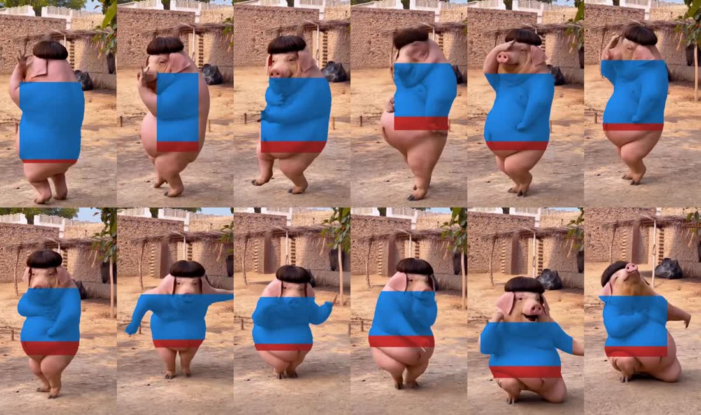

O Kling tem um modo chamado Motion Control: ele pega o movimento de um vÃdeo e aplica numa imagem parada. O kit prepara o vÃdeo para esse modo aceitar, e escreve tudo numa chamada só.
💃 Passos copiados de verdade
Com o Motion Control 3.0 o bicho segue a coreografia da referência quase quadro a quadro, não uma dança inventada.
👕 O truque da roupa pintada
O Kling recusa vÃdeo de corpo que parece nu. O kit pinta camiseta e short no dançarino, quadro a quadro, e o vÃdeo passa.
🎬 Pronto para postar
Sai um MP4 vertical 9:16 com a música da referência e 4,5 s finais com "construindo no ARCKHÉ AI · baixa o kit" escrito letra a letra.
Como funciona
Cinco etapas, uma chamada
O script kit/dancar.sh faz as etapas 2 a 5 sozinho. Você só escolhe o vÃdeo e descreve o bicho.
mkdir -p ~/.local/share/fonts
cp static/Montserrat-Black.ttf ~/.local/share/fonts/
ls ~/.local/share/fonts/Montserrat-Black.ttf # confira: tem que listar o arquivo
Baixe o kit:
git clone https://github.com/linnoff88-dev/bicho-dancando
cd bicho-dancando
Guia de uso · passo a passo
Do vÃdeo de referência ao bicho dançando
Rode os comandos de dentro da pasta bicho-dancando. O resultado fica em saida/<nome>/.
Dê o vÃdeo, um nome curto e a descrição do bicho em inglês (o Kling entende melhor). O script pinta a roupa, cria o bicho, copia a dança, põe a música e o fecho.
kit/dancar.sh ref/video.mp4 capivara "chubby capybara diva with a pink feather boa and red lipstick"# pronto: saida/capivara/capivara-final.mp4
Roupa pintada (grátis, no seu computador). O kit/vestir.py usa o MediaPipe (biblioteca do Google que acha o corpo na imagem) para pintar camiseta e short em cada quadro e grava referencia-vestida.mp4. Sem isso o Kling recusa o vÃdeo com AGENT.FileCensorshipUnsafe. Um boneco só de traços (kit/boneco.py) passa nessa checagem, mas falha com "No valid characters detected". A roupa pintada passa nas duas.
Música e fecho (grátis). O ffmpeg junta o áudio da referência e o kit/fecho.py escurece os últimos 4,5 s e escreve "construindo no / ARCKHÉ AI / baixa o kit" letra a letra, em amarelo e branco.

A referência "vestida" do teste. Ali o dançarino já era um porco; o kit pinta a roupa em quem estiver dançando, pessoa ou personagem.
Monte uma folha de quadros (12 fotos do vÃdeo numa imagem só) e olhe rosto, fundo e mãos (patas). Se ficou torto, rode o mesmo comando do passo 2 de novo: o script reaproveita a referencia-vestida.mp4 que já está em saida/<nome>/. Se ficou bom, publique onde quiser: Reels, TikTok, Shorts.
O kit/agnes_poses.py faz o porco com o Agnes: 1 imagem-âncora + 3 poses derivadas dela (para ser o mesmo bicho) + 3 clipes de 8 s indo de pose a pose. Os passos são livres, não copiados. Num dos 3 clipes a cena desviou (fundo trocado, bicho de costas): confira e refaça só o clipe torto. Exige o projeto videos-agnes clonado em ~/projetos/videos-agnes e uma chave da API do Agnes AI na variável AGNES_API_KEY (o guia do videos-agnes explica como conseguir).
Pose da imagem do bicho importa. Bicho parado, com as patas junto ao corpo, deu "No valid characters detected in the image" (sem cobrança). Use uma imagem com braços e pernas afastados do corpo, em pose de dança.